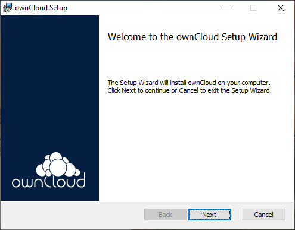
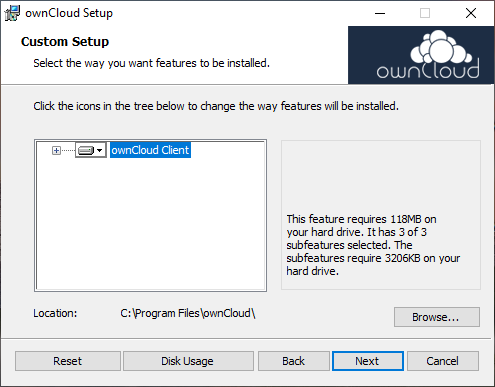
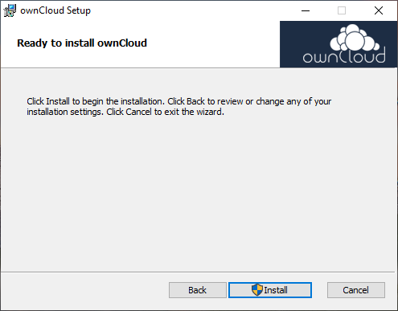
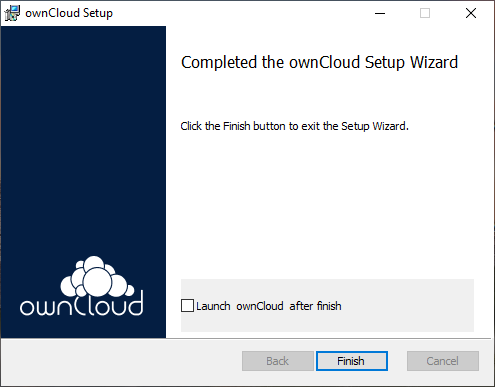
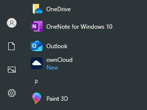
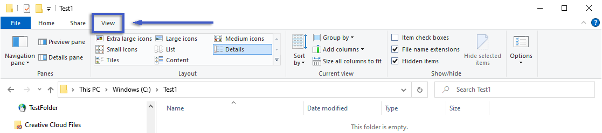
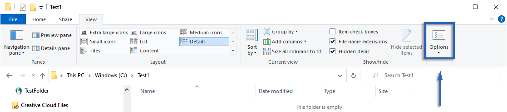
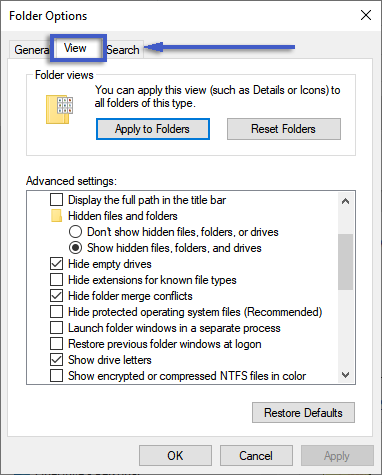
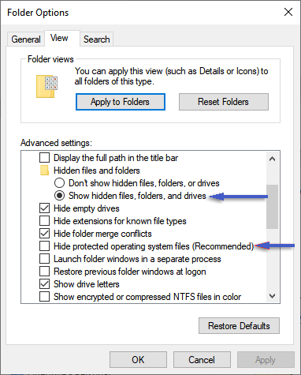
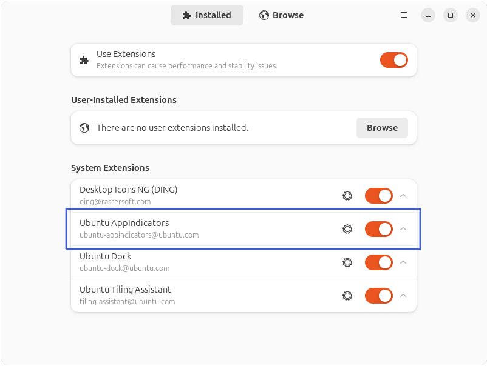

Installing or Deploying
Introduction
This documentation will guide you through the deployment or installation of the Desktop App for various operating systems.
System Requirements
Minimum Supported Operating System Version
Depending on the operating system used, some minimum system requirements need to be met. See the list of supported versions/distros below.
| OS | Version |
|---|---|
Windows x64 |
When using external drives storing the synchronization data, NTFS is required. Also see the VFS support documentation.
|
macOS |
|
Linux |
The Desktop App for Linux is provided via the following methods and is supported, if technically feasible, for the latest 2 versions per platform and the previous Ubuntu LTS.:
|
Download
You can download the latest version of the Desktop App from the Desktop App Download page. There are Desktop Apps for Microsoft Windows, macOS and Linux available.
Install or Deploy on Windows
Although installation on Windows is preferred by end users, deployment is intended for centrally driven rollouts on many clients.
| Filenames shown in the following sections are examples only and may need to be replaced with their real names. |
Installation on Windows
-
Installation on Windows is the same as for any software application: download the installer as described in the Download section, double-click it to launch the installation and follow the installation wizard.
-
The provided package includes shell integration, which consists of overlay icons and context menus for the file browser.
-
See the following example images of the installation process:





-
Once installed and configured, the Desktop App will update itself automatically unless you manually disable it. For more information about this setting see the Disabling Automatic Updates section.
Deploying on Windows
The binary provided has additional features relevant to deployment.
Features of the MSI Installer
The MSI installer has several features that can be installed or removed individually. You can also control from the command line if you want to automate the installation. To do so, run the following command:
msiexec /passive /i ownCloud-6.0.0.x64.msiThis command installs the Desktop App in the default location with the default features enabled.
For example, if you want to disable desktop shortcut icons, you can simply change the above command to the following:
msiexec /passive /i ownCloud-6.0.0.x64.msi REMOVE=DesktopShortcutSee the table below for a list of available features:
| Feature | Enabled by default | Description | Property to disable. |
|---|---|---|---|
Client |
Yes, |
The actual client |
|
DesktopShortcut |
Yes |
Adds a shortcut to the desktop. |
|
StartMenuShortcuts |
Yes |
Adds shortcuts to the start menu. |
|
ShellExtensions |
Yes |
Adds Explorer integration |
|
Installation
The Desktop App comes with a few binaries that include the Desktop App itself, a command line interface, and a crash reporter. You can choose to install only the Desktop App by running the following command:
msiexec /passive /i ownCloud-6.0.0.x64.msi ADDDEFAULT=ClientFor example, if you want to install everything except the DesktopShortcut and the ShellExtensions feature, you have two options:
-
You explicitly name all the features you really want to install (whitelist), where
Clientis always installed anyway.msiexec /passive /i ownCloud-6.0.0.x64.msi ADDDEFAULT=StartMenuShortcuts -
You pass the
NO_DESKTOP_SHORTCUTandNO_SHELL_EXTENSIONSproperties.msiexec /passive /i ownCloud-6.0.0.x64.msi NO_DESKTOP_SHORTCUT="1" NO_SHELL_EXTENSIONS="1"
| The ownCloud .msi file remembers these properties, so you don’t need to specify them on upgrades. |
| You cannot use them to change the installed features, if you want to do that, see the next section. |
Changing Installed Features
You can change the installed features later by using the REMOVE and ADDDEFAULT properties.
-
If you want to add the desktop shortcut later, run the following command:
msiexec /passive /i ownCloud-6.0.0.x64.msi ADDDEFAULT="DesktopShortcut" -
If you want to remove it, just run the following command:
msiexec /passive /i ownCloud-6.0.0.x64.msi REMOVE="DesktopShortcut"
Windows keeps track of the installed features. Using REMOVE or ADDDEFAULT will only affect the features mentioned.
Compare REMOVE and ADDDEFAULT at the Microsoft Windows Installer Guide.
You cannot specify REMOVE during the initial installation because it will disable all features.
|
Installation Folder
You can set the installation folder by specifying the INSTALLDIR property like this.
msiexec /passive /i ownCloud-6.0.0.x64.msi INSTALLDIR="C:\Program Files\Non Standard ownCloud Client Folder"Use caution when using PowerShell instead of cmd.exe. It can be difficult to escape whitespace correctly. Specifying the INSTALLDIR like this only works the first time you install, you cannot simply re-run the .msi with a different path. If you need to change it, uninstall it first and reinstall it with the new path.
Disabling Automatic Updates
To disable automatic updates, you can pass the SKIPAUTOUPDATE property.
msiexec /passive /i ownCloud-6.0.0.x64.msi SKIPAUTOUPDATE="1"Launch After Installation
To launch the Desktop App automatically after installation, you can pass the LAUNCH property.
msiexec /i ownCloud-6.0.0.x64.msi LAUNCH="1"This option also removes the checkbox that lets users decide whether to launch the Desktop App for non-passive/quiet mode.
| This option does not have any effect without GUI. |
No Reboot After Installation
The ownCloud Desktop App schedules a reboot after installation to make sure the Explorer extension is correctly (un)loaded. If you’re taking care of the reboot yourself, you can set the REBOOT property.
msiexec /i ownCloud-6.0.0.x64.msi REBOOT=ReallySuppressThis will cause msiexec to exit with an ERROR_SUCCESS_REBOOT_REQUIRED (3010) error. If your deployment tool interprets this as a real error and you want to avoid that, you can set DO_NOT_SCHEDULE_REBOOT instead.
msiexec /i ownCloud-6.0.0.x64.msi DO_NOT_SCHEDULE_REBOOT="1"Define Your own Synchronization Folder Icon
When setting up a new synchronization, ownCloud automatically assigns its icon to the synchronization folder for easy identification. Although you can change this icon, it will revert to the ownCloud icon the next time you restart. Folder icon details are usually stored in the hidden Desktop.ini file, which is located inside the folder in question. To make a manually defined icon persistent, a small modification to this Desktop.ini file is required. See the description below:
-
Make the
Desktop.inivisible, it is hidden by default:
Open the Desktop app, click on the three dots and there on
Show in Explorer.
In the Explorer, go to the
Viewtab
and click on the
Optionsicon.
In
Folder Optionsclick on theViewtab.
In
Advanced Settings, change the marked items. -
Now, the the
Desktop.inifile is visible, add a setting to make an icon change persistent. To do this, open it with an editor.-
The current content may look like this:
[.ShellClassInfo] IconResource=C:\Program Files\ownCloud\ownCloud.exe -
Add the following to the current content at the bottom:
[ownCloud] UpdateIcon=false
-
-
Hide the
Desktop.inifile by undoing theAdvanced Settingschanges from the first step. TheDesktop.inifile will then be hidden again. -
Finally apply an icon of your choice to the synchronization folder.
Installation on macOS
-
Installation on macOS is the same as for any software application: download the installer, double-click it to launch the installation and follow the installation wizard.
-
The provided package includes shell integration, which consists of overlay icons and context menus for the file browser.
Installation on Linux
Shell Integration and Overlay Icons
-
Linux Native Installation:
Depending on the way how the package is installed, shell integration consisting of overlay icons and context menus for the file browser is included. -
AppImage:
Currently, shell integration is not included in AppImages, nor can it be downloaded separately. To use shell integration with an AppImage, additionally install Linux Native with integrated shell integration, and use the AppImage as usual. The documentation will be updated if shell integration is provided independently.
Common Preparations
-
Note that our description focuses on the GNOME desktop. Adapt the procedures for other desktop environments accordingly.
-
You can add command line parameters when launching the Desktop App after installation. One parameter worth mentioning is the
-soption. This option forces the settings page to be displayed on startup. While not necessary for general use, it can be helpful if system tray icons are no longer available in your desktop environment. -
Linux users should also have a password manager enabled, such as GNOME Keyring or KWallet, so that the Desktop App can log in automatically.
-
When using GNOME on recent distributions such as Ubuntu +22.04, Debian +11, or others, the system tray is typically not available. This makes it difficult to restore an application that has been minimized to the system tray. In this case, you need to install a system tray recovery extension to be able to find and restore the minimized application.
To manage installed extensions, you need to use the
Extension Manager/Appindicator. If it is not available on your system, you need to install it first:-
Ubuntu / Debian
sudo apt install gnome-shell-extension-managerSee the following steps to install and configure the
gnome-shell-extension-appindicator:sudo apt install gnome-shell-extension-appindicator -
Red Hat Enterprise Linux based distributions
(including AlmaLinux and Rocky Linux), you must first install a different package:sudo dnf install epel-releaseThen run the following command. On Fedora, it is sufficient to simply run the following command:
sudo dnf install gnome-extensions-app gnome-shell-extension-appindicator -
For all other distributions,
follow the AppIndicator Support installation documentation. -
Once the extension is installed, you will need to log out and log in again to activate the changes. To manage extensions, open the
Extensions Manager. For this particular system tray icon extension, the name of the extension displayed may vary and may be such as Ubuntu AppIndicators or AppIndicator and KStatusNotifierItem Support. Once enabled, the system tray will be displayed again within the desktop environment.
-
Linux Native Installation
Linux users will need to follow the instructions on the download page to either install the package individually or via a packet manager. The Desktop App will display a notification when an update is available and updates are managed according the installation method selected.
AppImage
AppImages require one package to be installed before usage which is libfuse2t64. Check the following procedure if it is already present and how to install if not. Note that if there is no installation candiate for libfuse2t64, use libfuse2 instead. Installing libfuse v2 does no harm if libfuse v3 is already installed.
- Check the libfuse2t64 package and install if required
-
Check if
libfuse2t64is already installed:dpkg -l libfuse2t64 -
Check if there is an installation candidate for
libfuse2t64:sudo apt-cache show libfuse2t64 -
Install
libfuse2t64:sudo apt install libfuse2t64
Install and run the Linux Desktop App AppImage
An AppImage build of the Desktop App is available to support more Linux platforms. You can download the AppImage as described in the Download section of this document.
AppImages are an alternative way to deploy Linux applications — instead of having multiple files in multiple locations making up a package, the entire application is contained in a single file with an .AppImage extension, including all necessary dependencies and libraries. The AppImage will run on all modern and most older Linux platforms.
The example below uses the terminal but you can also use the GUI. Note the folder name Applications can be any name and helps to collect all AppImages you have on one location.
-
Create a target folder if not exists to store your AppImages:
mkdir -p ~/Applicationscd ~/Applications -
Download the binary:
Replace the URL from the example with the actual URL from the download page.wget https://download.owncloud.com/desktop/ownCloud/stable/latest/linux-appimage/ownCloud-6.0.0-x86_64.AppImage -
Make the AppImage executable:
Note that the filename is only an example.sudo chmod +x ownCloud-6.0.0-x86_64.AppImage -
Start the AppImage by invoking the following command:
~/Applications/ownCloud-6.0.0-x86_64.AppImage
Connection Wizard
When everything is set up and the application is started for the first time, you will be directed to the Connection Wizard to set up a new synchronization connection. The connection wizard is always displayed when no connection has been established.